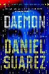
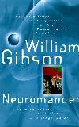
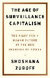

I'm not a good a reader, not even remotely as good as I would like to be, for sure. But I like books. Paper, digital, makes no difference. I read physical books when I can get my hands on them, or on a Kindle, on Calibre, on the terminal if I'm feeling cheeky, if I'm reading something cyber/cypherpunk... even on the phone, but that's mostly for listening to the "read aloud" feature on the e-book reader app while doing dishes. I like to scroll my Calibre Library and just browse the more than 20,000 digital books that I have there for entertainment, I like that better than scrolling on social media these days.
This is neither exactly a list of books I recommend, or have read, or "to be read". A little bit of all that, or maybe just books that have caught my attention and want to have saved on a list somewhere.
Cypherpunk books
Cypherpunk is closely related to Cyberpunk, but not exactly the same; it's more about the encryption, internet surveillance, anonymity stuff, and a bit less about about the ultracapitalist-cyber-dystopia themes and less body modification.
-> Fiction (most of these, including the comment, are from recommendations found on Reddit.)
- Karl Schroeder, Stealing Worlds — (This is probably runner-up to Doctorow. All about building a society outside of government control based on block chain, etc.)
-
Daniel Suarez, Daemon and Freedom — (While they don't concentrate much on encryption, they sure as hell do on online identity and trust.) — Started reading Daemon, pretty good.
 - Vernor Vinge, Rainbows End — (Identity and trust feature in it)
- Neal Stephenson, Cryptonomicon — (So very much encryption, lol)
- Cory Doctorow &mdash, Little Brother (is Mr. Robot referencing this???), Walkaway.
-
William Gibson, Neuromancer. — Not entirely sure if this is cypherpunk or just cyberpunk, like I said, the line is a little blurry.
 - Rudy Rucker, Ware Tetralogy
Non-Fiction.
- Edward Snowden, Permanent Record — read it, awesome book, more of an autobiography, but it does have some interesting bits about cryptography and anonymity.
- Jullian Assange, Cypherpunks: Freedom and the Future of the Internet — I'm a couple chapters in; very interesting. It's a discussion between him and a couple of activists about cryptography, privacy, surveillance, etc.
-
Shoshana Zuboff, The Age of Surveillance Capitalism.
